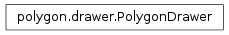

Displays the polygon objects onto the canvas by supplying draw methods.
| Parameters: |
|---|
Establishes a corner of a rectangle as anchor for when the user drags the cursor to create a rectangle. Used in “Draw Rect” button
| Parameters: | event – A Tkinter passed event object |
|---|
Draw the polygon to the screen
| Parameters: |
|
|---|
Draws the rectangle and stores the vertices of the rectangle internally. Used in “Draw Rect”
| Parameters: |
|
|---|
Check if tag is in attributes
| Parameters: | tag (str) – Variable for checking |
|---|---|
| Return type: | bool |
Move the location of the object
| Parameters: |
|
|---|
Draws a polygon by plotting points. After the third point, if two line segments intersect, the canvas will draw a polygon using the existing lines and the point of intersection
| Parameters: |
|
|---|
Removes an attribute
| Parameters: | tag (str) – Tag to search for and remove |
|---|
Draws temporary helper rectangles that helps the user draw rectangles
| Parameters: | event – A Tkinter passed event object |
|---|
Set the attributes
| Parameters: | attributes (list) – Variable to set internal attributes to |
|---|
Set the color
| Parameters: | color (str) – Variable to set the internal color to |
|---|
Set the coordinates
| Parameters: | coordinates (list) – List to set the internal coordinates to |
|---|
Retrieves the point of intersection of two lines given two points on each line :param a1, a2: Two points on the first line :param b1, b1: Two points on the second line